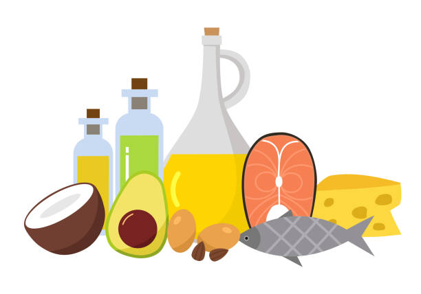

Domaines d'application
Découvrez les différentes situations dans lesquelles la nutrition-santé peut vous accompagner pour améliorer votre quotidien.
Femme enceinte
- Alimentation spécifique
- Régulation de la glycémie
- Préparer l’après…
Comportement alimentaire
- Compulsions alimentaires
- Hyperphagie
- Restriction cognitive

Rééquilibrage alimentaire
- Limiter les risques pour la santé
- Apprendre à mieux manger
- Image de soi et bien être
Maladies métaboliques
- Diabète
- HTA
- Obésité
Maladies digestives
- Syndrome de l’Intestin Irritable
- Régime Low FODMAPs
- Dysbioses, MICI…
Arrêt du tabac
- Type de dépendance
- Gestion du poids
- Prévention de la rechute